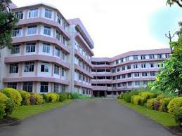

| Home | | | About | | | Departments | | | Placements | | | Contact us |
|
LATEST NEWS |
The College of Engineering Chengannur, an institution of excellence in the domain of technical education, was established in the year 1993, with a vision to create engineers having the drive, skill, and confidence to become the pioneers of tomorrow.The College functions with the highest order of discipline so that all students are trained to excel in highly professional environments The college was set up under the auspices of the Institute of Human Resources and Development (IHRD) and is recognized by the All India Council for Technical Education (AICTE), New Delhi. It is affiliated to the Cochin University of Science and Technology (CUSAT) which is known internationally for its academic excellence. The college offers three Under Graduate Programmes in Computer Science & Engineering, Electronics & Communication Engineering and Electrical & Electronics Engineering. The first two programs were accredited by the National Board of Accreditation (NBA), a statutory body set up by AICTE and enacted by Govt. of India for the purpose of assessment of quality and accreditation of Technical Education programs of India. Benefits of the NBA accrediation are AICTE preferential funding, top preference from companies conducting campus interviews, exemption from undergoing eligibility tests for higher studies in foreign countries that have a tieup with NBA. The annual intake in both Computer Science & Engineering and Electronics & Communication Engineering is 120 each and in the Electrical & Electronics Engineering program is 60. In addition, 5% (for the academic year 2011-'12) of students are admitted in each discipline under Fee Waiver Scheme (FWS) with tuition fee concession. Vision To become a frontline global institute. Mission To facilitate quality education in Engineering, foster research to achieve world class stature, take up new challenges in education by adopting new technologies viable for teaching and build young individuals capable of assuming leadership of society for the betterment of our nation. |
 |